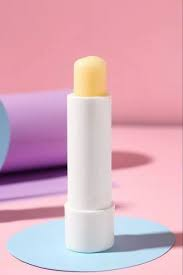

A natural exfoliating treatment made from plant-based ingredients like herbs, fruits, and grains.
Remove dead skin cells and dirt, helping to reveal a brighter, smoother complexion.
Ideal for dry, sensitive, and aging skin types.
"My skin feels so much smoother and softer after using this herbal scrub. I used to have dry patches, but they're gone now! – Sam N.
"I've noticed a significant improvement in my skin's radiance. It looks much brighter and more even-toned" – Smarika D.

Natural Lip Balm